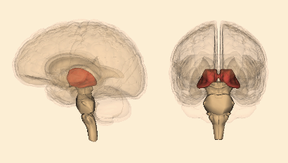
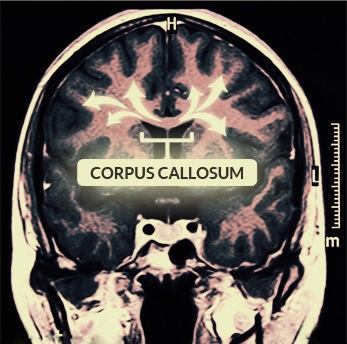

{kind=link}
Međumozak
Međumozak čine: talamus, metatalamus, epitalamus, subtalamus, hipotalamus i treća moždana komora.Talamus je najveći deo međumozga. To je parna struktura jajastog oblika.
Ima sledeće funkcije: prenosi motorne signale između malog mozga, kore velikog mozga i bazalne ganglije, prenosi senzorne informacije (od svih čula osim čula mirisa) do određenih delova kore velikog mozga i odlučuje kojih od tih informacija ćemo biti svesni, čini svaki deo mozga svesnim onoga što drugi delovi mozga u tom trenutku rade, ima ulogu u regulisanju nivoa pažljivosti i svesti.
Metatalamus je parni simetričan deo međumozga koji se nalazi ispod talamusa. Čine ga dva kolenasta tela: spoljašnje i unutrašnje. Spoljašnje kolenasto telo je povezano sa gornjim kvržicama srednjeg mozga, a unutrašnje sa donjim. Njihova uloga je dalji transport vizuelnih i akustičkih informacija ka kori velikog mozga, a imaju i ulogu prilikom usmeravanja pažnje na određeni zvuk ili objekat. Na primer, kada čujemo neki zvuk, spoljašnje kolenasto telo je zaduženo da usmeri pažnju očiju na deo prostora odakle taj zvuk dolazi.
{kind=link}
Epitalamus se nalazi u zadnjem delu međumozga. Ima ulogu u regulaciji gladi i žeđi. U njemu se nalazi epifiza - mala endokrina žlezda koja sprečava prerani pubertet i luči hormon melatonin koji ima ulogu u regulaciji cirkadijalnog (24 časovnog) ritma.
Subtalamus se nalazi ispod talamusa i ima ulogu u regulaciji uzimanja tečnosti. Njegovo oštećenje se može ispoljiti iznenadnim nevoljnim brzim pokretima na suprotnoj strani tela od mesta povrede.
Hipotalamus se nalazi ispod talamusa. On učestvuje u kontroli funkcije kardiovaskularnog sistema i regulaciji telesne temperature, kontroliše unos hrane i tečnosti i apetit (u njemu se nalazi centar za glad), a ima i ulogu u kontroli cirkadijalnog ritma. Takođe učestvuje u regulaciji agresivnog ponašanja, u nastajanju emocionalnog stresa i seksualnog nagona i regulaciji ofanzivnog i defanzivnog ponašanja. U hipotalamusu se nalazi endokrina žlezda hipofiza.
{kind=link}
Hipofiza kontroliše sledeće procese: rast, krvni pritisak, trudnoću i porođaj, lučenje mleka, funkcije polnih organa, metabolizam i rad ostalih endokrinih žlezda.
Veliki mozak
Veliki mozak je najrazvijeniji deo mozga, on pokriva sve ostale delove mozga i zauzima najveći deo lobanjske duplje. Veliki mozak čine: moždana kora, leva i desna moždana komora, neki delovi limbičkog sistema, mirisni mozak (rhinencephalon) i bazalne ganglije.Mirisni mozak prima informacije od čula mirisa i zadužen je za razlikovanje mirisa i njihove jačine. Takođe na zahtev viših delova mozga omogućava da se izdvoji određeni miris iz skupa mirisa koje primamo od spoljašnje sredine.
{kind=link}
Limbički sistem obavija moždano stablo i nalazi se ispod moždane kore. Sastoji se iz mnogo delova, od kojih su najvažniji: bademasto telo - corpus amygdaloideum (zaduženo je za formiranje i čuvanje sećanja povezanih sa jakim emocijama, stvara strah, agresivnost, bes i ljubomoru, ima ulogu u ubrzanom radu srca, ubrzanom disanju i nemogućnosti pokretanja u situacijama koje izazivaju snažan strah) i hippocampus (prvenstveno je zadužen za prenos informacija iz kratkoročnog u dugoročno pamćenje, a ima i ulogu u snalaženju u prostoru). Ostale funkcije limbičkog sistema su: deo je sistema nagrađivanja, učestvuje u stvaranju zavisnosti, kontroliše emocije i sposobnost da se nauče i kontrolišu nagoni kao što su glad, žeđ, agresija, igra važnu ulogu u donošenju odluka i očekivanju, tj. kontroliše planiranje ponašanja na osnovu uočavanja mogućih problema, konflikata i grešaka koje bi prouzrokovali neki naši postupci.
Bazalne ganglije učestvuju u iniciranju i kontroli pokreta, kao i u formiranju osećanja kao što su stid, sramota i krivica.
{kind=link}
Mozak je obavijen moždanom korom. To je najsloženiji i filogenetski najnoviji deo mozga. Duž srednje linije veliki mozak je podeljen nepotpuno na dve hemisfere: desnu i levu, dubokom uzdužnom pukotinom čije dno gradi žuljevito telo (corpus callosum) - tanak snop nervnih vlakana preko kojih se informacije prenose iz jedne u drugu hemisferu. Leva hemisfera kontroliše desnu polovinu tela i obrnuto.
Razlika između hemisfera je u načinu obrade informacija: leva hemisfera podatke obrađuje sekvencijalno, a desna sve istovremeno. Zbog toga desna hemisfera ne daje odovore u svakom trenutku i ostavlja levoj hemisferi da sama nađe razloge nekih uverenja i odluka koje ona donese. Samim tim desna hemisfera je više uključena u osećanja i kreativnost, a leva u logično zaključivanje, analiziranje i snalaženje u prostoru.
Površine hemisfera su vijugavo naborane - moždane vijuge (gyri) razdvajaju moždani žlebovi (sulci). Duboki žlebovi dele površine svake hemisfere na po pet delova: čeonu zonu, potiljačnu zonu, slepoočnu zonu, temenu zonu i ostrvo (insula).Čeona zona učestvuje u kontroli nagona, planiranju, rasuđivanju, pamćenju, rešavanju problema, socijalizaciji, spontanosti, pomaže nam da izaberemo između dobrog i lošeg ili boljeg i najboljeg, ima sposobnost da predvidi posledice trenutnih događanja i na osnovu toga donese neku odluku, pomaže da se prebrode i potisnu socijalno neprihvatljive želje, ima sposobnost da uvidi sličnosti i razlike između nekih događaja i stvari, omogućava da se naše misli pretvore u reči, stvara našu ličnost.
Potiljačna zona prima informacije od čula vida i obrađuje ih: razlikuje boje i oblike, opaža pokrete i prostorne odnose.
Slepoočna zona je zadužena za obradu informacija koje prima od čula sluha (uključujući više funkcije: govor, razumevanje jezika, govorna memorija), za više vizuelne funkcije (prepoznavanje lica, prizora i objekata) i kratkoročno pamćenje.
Temena zona sakuplja zajedno sve senzorne informacije (ukus, dodir, temperaturu, bol, vid, sluh) i povezuje ih sa našim sećanjima kako bi im dala značenje, a zadužena je i za orijentaciju.
Ostrvo ima ulogu u stvaranju nekih emocija kao što su strah, bes, tuga, sreća, gađenje, i povezivanju nekih sećanja sa emocijama.
{kind=link}
Funkcionalne zone (polja) moždane kore su primarne, sekundarne i asocijativne.
Primarne zone su odgovorne za elementarne motorne funkcije i za elementarne osete. Sekundarna polja se nalaze oko primarnih senzornih oblasti i njihova uloga se sastoji u tome da na osnovu iskustva omoguće prepoznavanje različitih oseta. Asocijativna polja su oblasti moždane kore u kojima se vrši složena obrada više različitih informacija koje dolaze iz raznih područja kore. Ona omogućavaju složene funkcije kao što su mišljenje, rasuđivanje, pamćenje, motivacija, emotivno ponašanje. Sva polja se nalaze i u levoj i u desnoj hemisferi, ali nemaju jednak funkcionalni značaj. Uglavnom je polje u jednoj hemisferi dominantno u odnosu na isto polje suprotne hemisfere - to je lateralizacija funkcija kore veliko mozga.